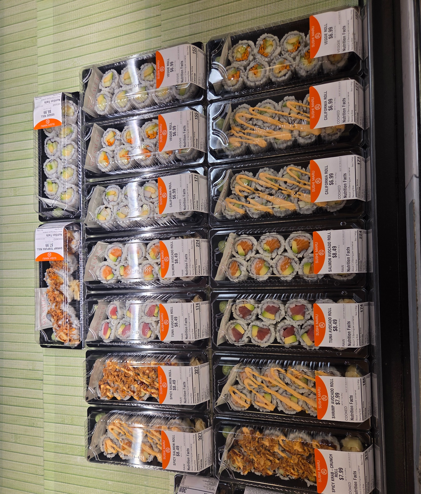
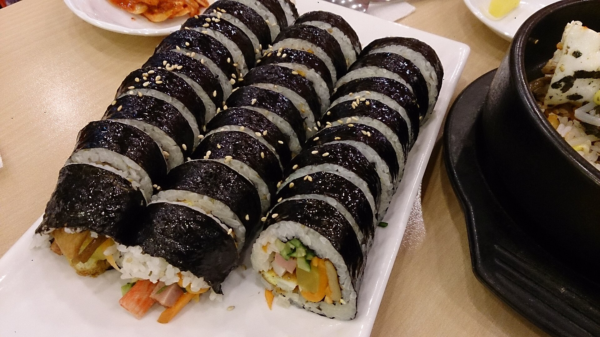
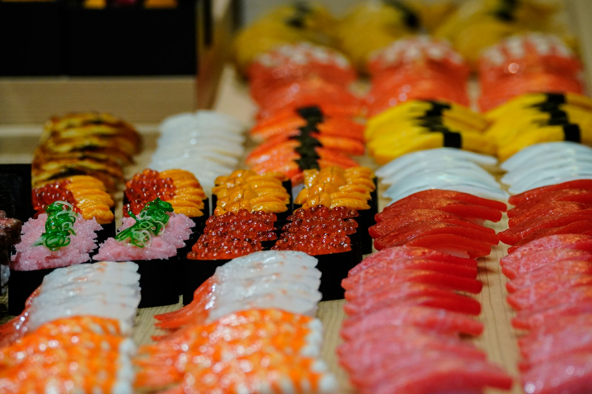
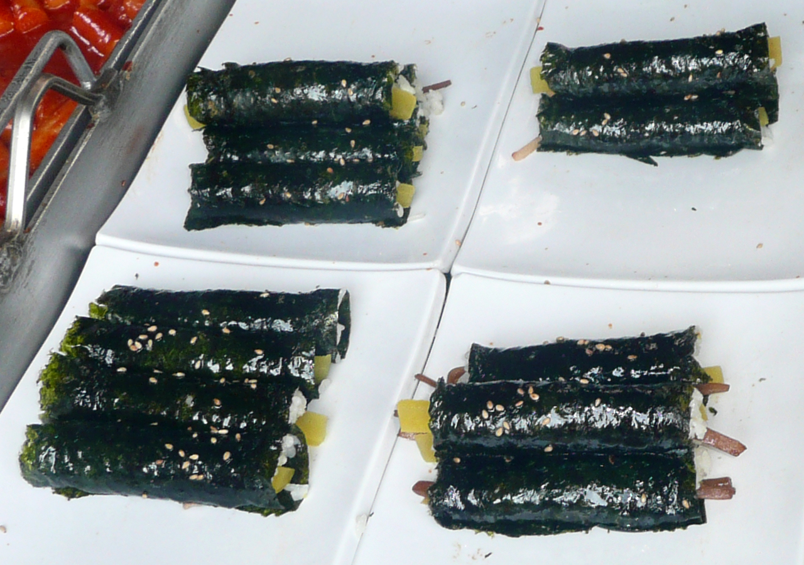
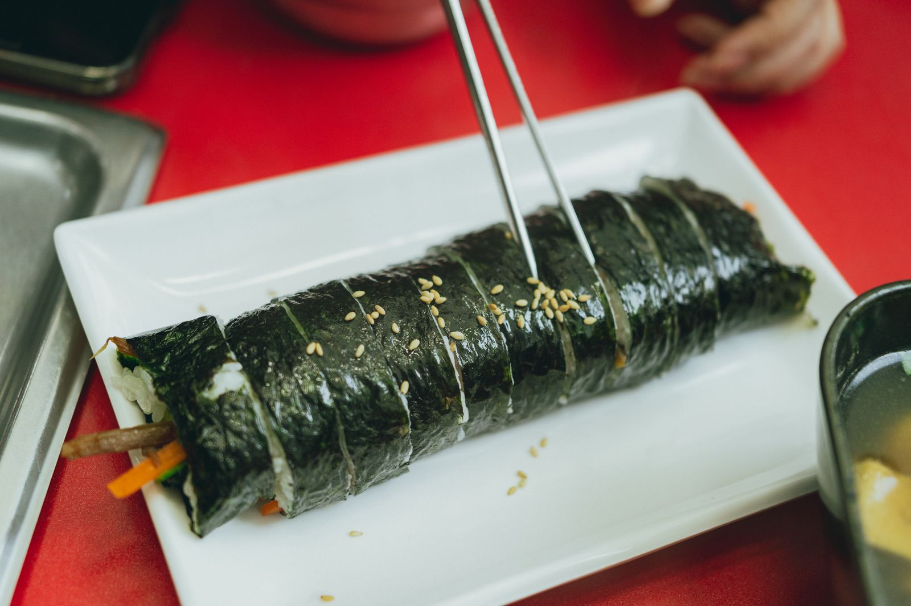
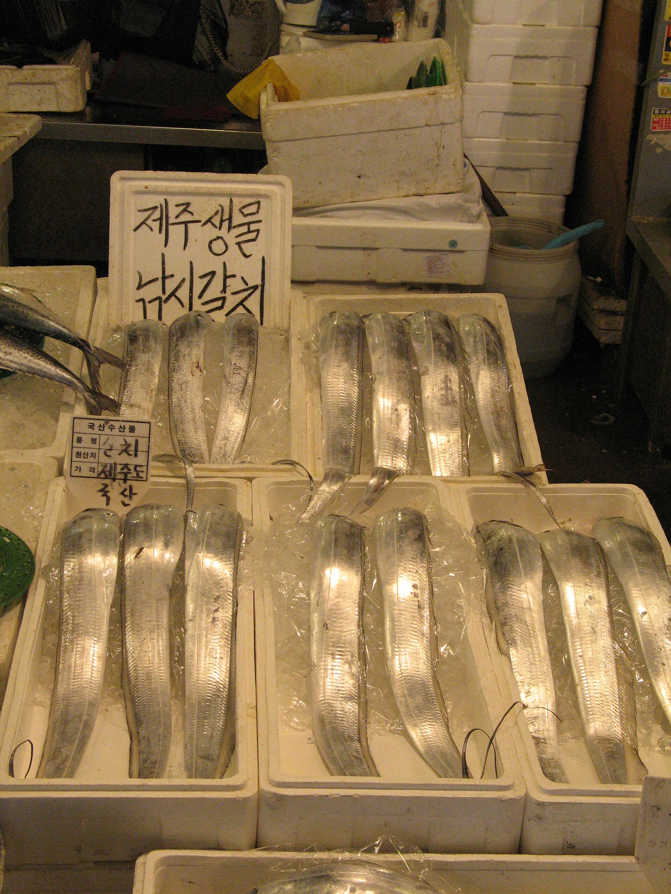
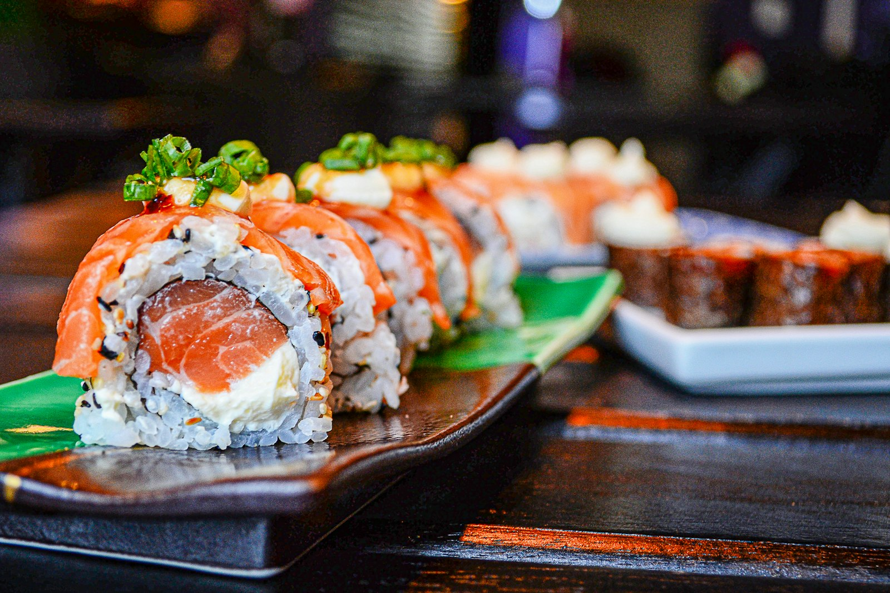

1. Convenience maki
CU, GS25, 7-Eleven. Packaged 마끼 / 김초밥. Fluorescent, plastic, identical trays. 7-Eleven Korea is adding maki convenience sets (diagonal-cut maki + inari; film-separated crisp nori handrolls). Closest analog to the Maru case.
Dave Design Studio · 2-hour Korea pass
Inspiration: Lou Dorfsman’s Gastrotypographicalassemblage, the 1966 type wall in the CBS Building cafeteria. Food names packed like a printer’s job case. Objects sit in the grid. Neon says EAT.
 김밥
KIMBAP
김밥
KIMBAP

SPICY KRAB ROLL wasabi
NORI · GARI · SHARI
wasabi
NORI · GARI · SHARI

광장시장 NORYANGJIN
ikura 연어 광어 ITAMAEDorfsman’s wall treated food words as objects. Korean grocery sushi and the Sushi Maru case treat labeled trays as type. Photograph sushi as a wall: mixed lettering, repeating packages, a few real objects punched through the grid.
Attached field photo. Overhead, two columns of black trays, orange/white labels, mint ribbed mat. This is the typewall in retail form.
Sushi Maru Express (Ridgefield Park, NJ) runs turnkey grocery kiosks — 160+ stores. Same visual family as Korean mart deli sushi, even when the brand is American.
CU, GS25, 7-Eleven. Packaged 마끼 / 김초밥. Fluorescent, plastic, identical trays. 7-Eleven Korea is adding maki convenience sets (diagonal-cut maki + inari; film-separated crisp nori handrolls). Closest analog to the Maru case.
Emart Kitchen Deli, Homeplus 싱싱회관. Nigiri sets, thick neta, live making. Emart has sold on the order of 2.78 pieces per second in peak reporting; ₩9,980 16-piece sets; premium salmon built for a fat neta. Bright store light, overhead platters, price cards as type.
Gwangjang: kimbap and mayak gimbap — sesame oil, danmuji, metal chopsticks. Not sushi. Noryangjin: 회, fresh not aged, galchi and flounder on ice with handwritten Jeju tags. Signage is the typewall.
Sushi Cho (Four Seasons), Sushido Gangnam, Sushi Sora. Hinoki counter, cool side light, 30–45° nigiri, chef hands. Dark slate, not fluorescent. Use this hour as the contrast set against the grocery grid.
One Emart or Homeplus deli + one convenience store. Shoot the case as Dorfsman would: full wall, then one tray, then label crop, then lid-off hero. Collect Hangul price cards and SKU names for the type wall.
Either Noryangjin (hwe, ice, tags) or one omakase counter (if booked). Cool daylight or one soft LED from the side. White bounce card. No mixed tungsten.






Kimbap is not sushi. Hwe is not aged sashimi. Grocery uramaki is not omakase nigiri. Keep three labeled piles in the research: grid / market / counter. The CBS wall works because every word is still a word. Every photo here should still be clearly one of those three.
Wall homage after Dorfsman / Lubalin / Carnase, 1966, CBS cafeteria; restored “Lou’s Wall” at the CIA, Hyde Park. Sushi Maru case: attached field photo. Other stills: Unsplash, Pexels, Wikimedia Commons (gimbap; Noryangjin fish market by Gaël Chardon).